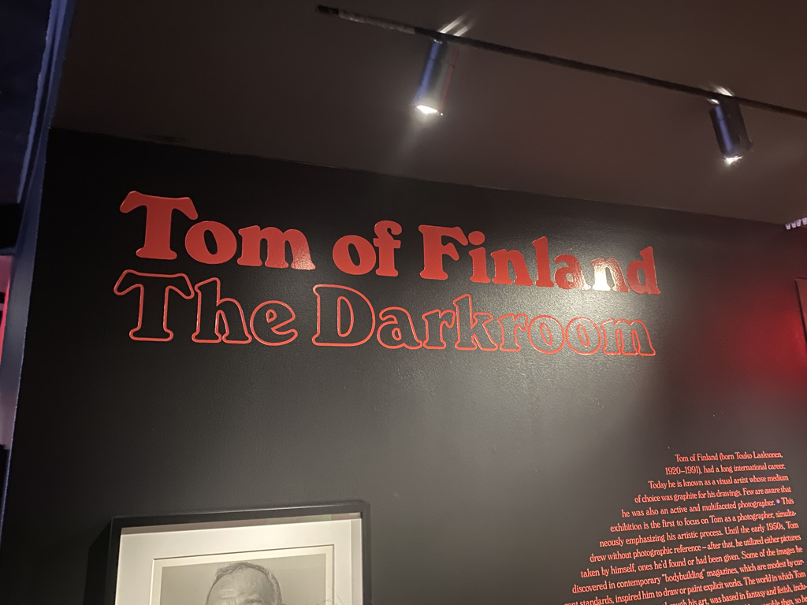

Cat Dad
I'm the proud parent of two cats, Mantequilla and Little Round Eyes. I love animals of all shapes and sizes but these two wll always have a special place in my heart. They're great coding companions!
 Green Thumb
Green Thumb
In addition to sharpening my coding skills, I also run a urban garden design start-up with my wife. You can see the work we do here. we try and focus on using Florida native plants!
Universal Design
As someone who has a disability, it's important to me that the work I do is designed universally so everyone can enjoy it. It's better to code with accessibility in mind now rather than fix it later.
 LGBTQ 🏳️‍🌈
I am a disabled, queer, Jewish male who loves to travel and take in new sights (and food) with my wife. We've been to Estonia 🇪🇪, Germany 🇩🇪 , and Japan 🇯🇵 together and I've also been to Hungary ğŸ‡ğŸ‡º.